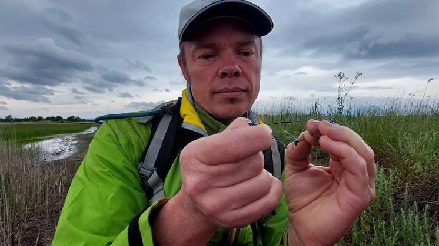
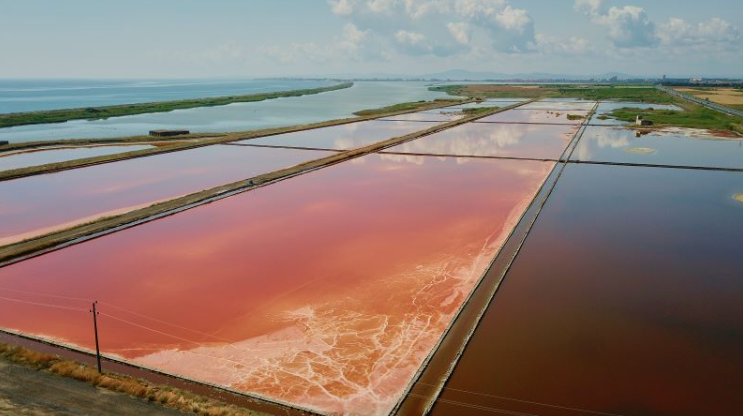
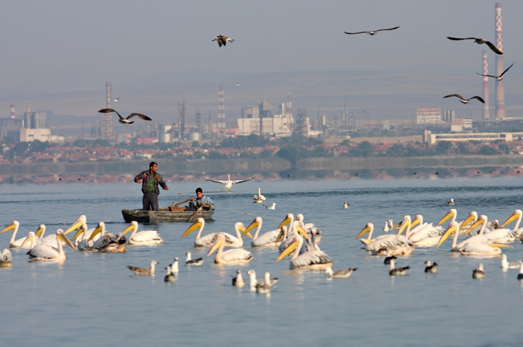
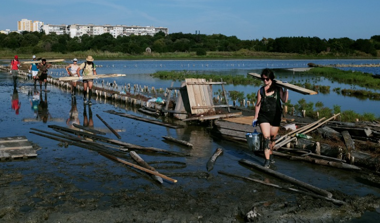

Френски експерт изследва рядък вид водно конче в
Поморийско езеро

Тази седмица международният експерт по водни кончета
Филип Ламбер е на посещение в Поморийската лагуна,
за да проучва популацията на водното конче – тъмно смарагдово
шило (Lestes macrostigma). Видът е застрашен на европейско ниво
и
почти изчезнал в цяла Европа, но се среща в някои влажни зони
по българското Черноморие.
Продължете да четете...
Живот за Поморийското езеро с нов проект

Тригодишен консервационен проект по програма LIFE
на Европейската комисия започва в Поморийско езеро.
Това съобщават от Фондация „Биоразнообразие“.
Проектът обединява нестопанския (две български екологични
организации), научния
(френска биологична станция)
и стопанския (частен бизнес, който оперира в езерото) сектор.
Продължете да четете...
Влажните зони в градовете ги правят живи и красиви

Във връзка със Световния ден на влажните зони – 2 февруари,
екипът на проект "Солта на живота",
LIFE+ организира специално събитие в читалище „Хамалогика“.
Заповядайте в 19.00 часа на дискусията „Влажните зони в
градовете –
предизвикателства и възможности. Случаят Бургас.“
Продължете да четете...
Седем дни 70 доброволци ремонтираха домовете на
птиците в Атанасовско езеро

70 доброволци успяха да ремонтират домовете на птиците
в единствената по рода си солена лагуна у нас
– Атанасовско езеро по време на 30-та природозащитна
бригада на Българското дружество за защита на птиците,
провеждаща се
край Бургас.
Продължете да четете...